PROG10082/PROG24178 - Installing & Using NetBeans
Additional Resources
Downloading & Installing NetBeans
Prerequisites: You must already have the Java SE (JRE and JDK) already installed on your system. If you don't have
these installed, you can
install them seperately or you
can go to the
Java SE downloads page
(
http://www.oracle.com/technetwork/java/javase/downloads/index.html) and click on the Download button beside
"
JDK 6 Update xx with NetBeans 6.x (where x will appear as a digit). Make sure you select the proper platform (particularly if you're using
Windows Vista). This download will install the Java SE and NetBeans together, so you won't have to follow the instructions below.
NetBeans can be downloaded from the NetBeans Download Page at http://netbeans.org/downloads/index.html.
- From the menu along the top of the page, select "Downloads", then select "NetBeans".
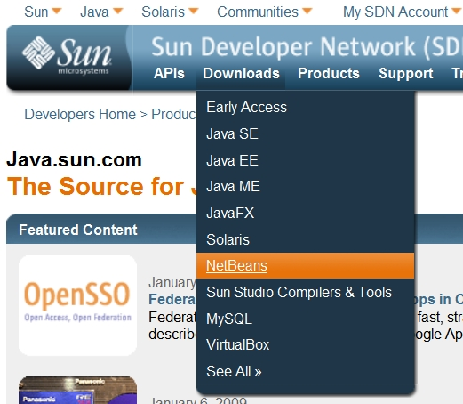
- On the NetBeans IDE download page, you'll see a chart. We just need the
basics, so click the "Download" button at the bottom of the "Java SE" column.
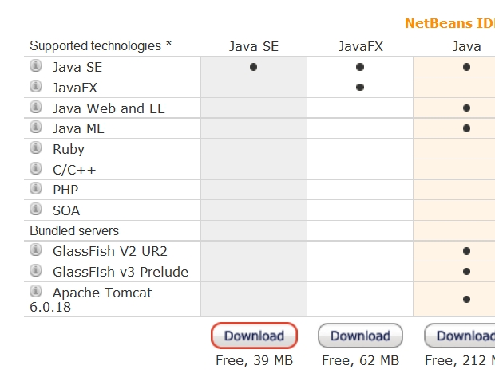
- The download should start automatically. If it doesn't, click the "download it here" link.
- Save the file to a location on your computer and make note of this location for future reference.
- When the download is complete, locate the file you downloaded and double-click it to start the install.
- the file may look something like, but may not exactly match the name netbeans-6.5-ml-javase-windows.exe
- The installation set up will take place and you will then be presented with
the first installation screen. Click Next to begin the installation.

- The next screen presents the licence agreement. To continue the installation, you must accept the license agreement by checking "I accept the terms in the licence agreement" and clicking the Next button.
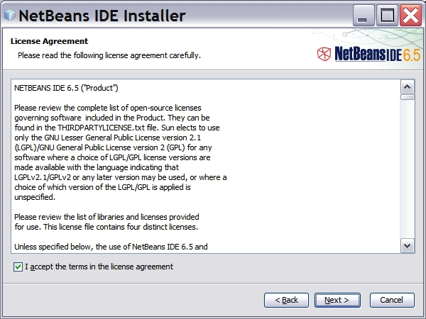
- The next screen should show the default installation location and the location of your most current JDK. These fields should already be filled in, so click Next.
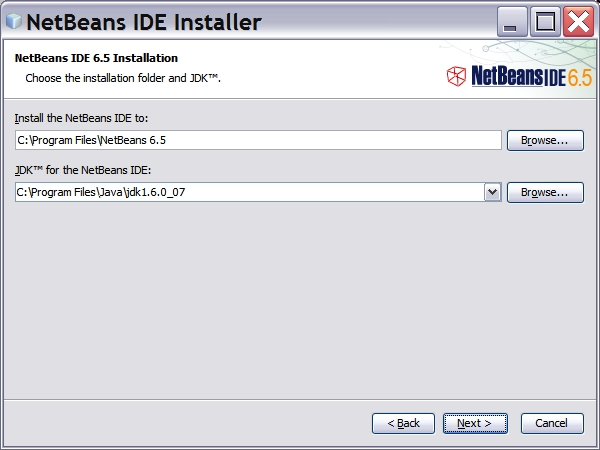
- If the "JDK for the NetBeans IDE" field is not filled in, it could be that it could not find your Java development tools. In this case, use the browse button to locate your Java\jdk folder and select it.
- If you don't have a Java\jdk folder, it means that the Java development tools have not been properly installed on your system. Terminate the installation by pressing Cancel and follow the instructions in the yellow box at the top of this tutorial.
- The next screen simply confirms the install settings, so click the Install button to continue.
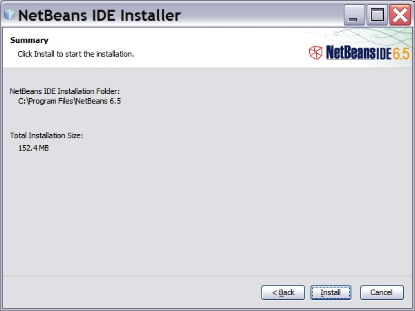
- The installation will take a minute or two...
- The final screen confirms successful installation of NetBeans and asks if you would like to submit your usage data to Sun and if you'd like to register NetBeans. You can uncheck both of these if you like (it's up to you!). When you're done, click the Finish button.
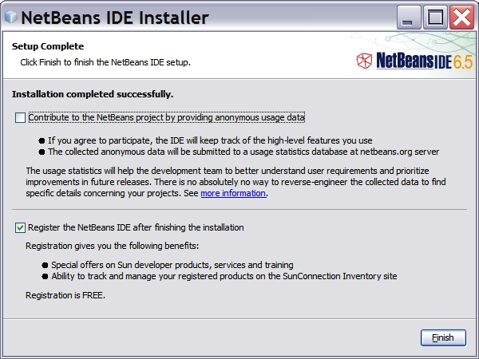
That's it! You've just installed the NetBeans IDE! You should find a shortcut on your desktop to NetBeans, and also
an item for NetBeans in your Start menu.
Customizing NetBeans
Some of you may want to customize your workspace. To change your workspace preferences, click the Tools menu,
then select Options. Here are some of the more common customizations you might prefer:
Code Folding: (Editor settings, General tab) Code folding allows you to "fold" or close
sections of code so that you can have more editing space. For example, if you don't need to see your main() method because
it's finished, you can close or fold it so that all you see is the header. You can hover your mouse over a folded piece of
code to see a big tooltip with the contents.
Under the Code Folding option, you can select which types of code you want to be folded automatically. I prefer to leave
these empty since I like to fold and unfold the code myself as I require, but you might prefer to always see a particular type
of code folded by default, such as Javadocs.
Tabs and Right Margin: (Editor settings, Formatting tab) Here you can change the size of your
tabs (never use less than 3) and the right margin size. The value for the right margin is the character position at which a
thin vertical line will appear in your editor. You might change this if you're using a large font size, so you can ensure
that long lines will not be cut off if your code is printed.
Java Code Format Settings: (Editor settings, Formatting tab) If you select "Java" in the "Language" field,
you can change settings that are specific to Java. Pull down the "Category" list to see the different items. For example, you
can select whether braces go on a new line or the same line as the statement that opens them (and you can choose to do
this for only certain structures if you like), whether braces are automatically generated when you type certain statements like "if" or
"while", and various settings dealing with spacing (line and character) and wrapping. As you make changes to these settings, the
preview window to the right will show how your changes will look!
NOTE: If you don't see "Java" in the "Language:" drop-down list, just start up a new Java
project (see instructions) to "activate" Java in your IDE. Then you can go back to Tools/Options
and you should see "Java" in the drop-down list.
Code Completion: (Editor settings, Code Completion tab) By default, the docs for methods and classes will
appear when you're using "code completion" (some call this "intellisense" - as you're typing, the editor will give you lists
of items that you can choose from to make coding easier and faster). Some people don't mind seeing the list of matching
items, but find seeing the docs can be annoying. You might want to uncheck this if you find that the docs popup gets
in your way.
Code Templates: (Editor settings, Code Templates tab) This is where you can modify, delete, and add
templates that are used for Code Completion.
Syntax Colours: (Fonts and Colours settings, Syntax tab) If you select "Java" from the "Language" list,
you can change the colours of the Java code text in your editor. You can see your changes in the Preview window. As you select an
item in the list, a small line will flash under a sample of that item in the preview window for a few seconds (this is supposed
to help you see what a particular item refers to, but the line can be hard to catch :P ). You can also click an item in
the preview window, and that item will automatically be selected in the list (I find this much easier when I just want
to change the colours of one or two things!)
There are a variety of other settings you might wish to change. Feel free to browse around the Options window!
Changing Print Settings
To change settings that affect how your code printouts should appear, select "Print" from the File Menu.
At the bottom of the Print Preview window, click the "Print Options" button.
You can change the print header and print footer to include special values like the file name or
date/time the printout was made. By default, you should see that the variable value for "%NAME%" is printed
on the left end of the print header. %NAME% refers to the file name that is being printed. To insert a special value
in one of the three areas of a print header or print footer, select one of the macro buttons below the header
and footer settings (hover over each button to see what it does).
The same dialog box will also allow you to choose to print line numbers and to wrap long lines so that they
aren't chopped off by the printer.
To print in black-and-white (so that the colours don't show up in different shades that might not be
legible), make sure the "Use Color Attributes" checkbox is unchecked.
Other Settings
Line Numbers: To show line numbers, click the "View" menu, then select "Show Line Numbers".
The NetBeans IDE
References:
From
Books24x7: Pro Netbeans IDE 6 Rich Client Platform Edition by Adam Myatt,
Brian Leonard and Geertjan Wielenga,
ISBN: 9781590598955 -- Read Chapter 1, the section titled
"Navigating and Understanding the IDE Layout".
After reading the chapter mentioned above, you should be able to define the purpose of and locate each
of the following windows in the NetBeans IDE. Don't skip this part! It's important that you learn these
different elements of the IDE in order to follow the rest of the material in this course!
NetBeans IDE Windows:
- Projects
- Files
- Services
- Navigator
- Source Editor
- Output
- Properties
For most of the projects we create in the first half of the course, you won't need the Properties window. You can close it
by clicking it's small "X" button. You can open any of the windows by selecting that window name from the
IDE's "Window" menu.
One window that is not mentioned in the textbook is the Tasks window. This should appear in the bottom
part of the interface, with the Output Window. If it isn't visible, select "Tasks" from the Window menu.
The tasks window shows your "TO DO" list. When programmers are coding, they often want to leave themselves
reminders of things to do or fix later on. To remind themselves, they place a special "TODO" comment tag in the spot
where they want to perform the task, along with a description of the task. The Task window will automatically
locate and list all your "TODO"s for you. You can see an example in the screen shot below (although it's not a great
example, since TODO's are supposed to be for coding tasks :) )
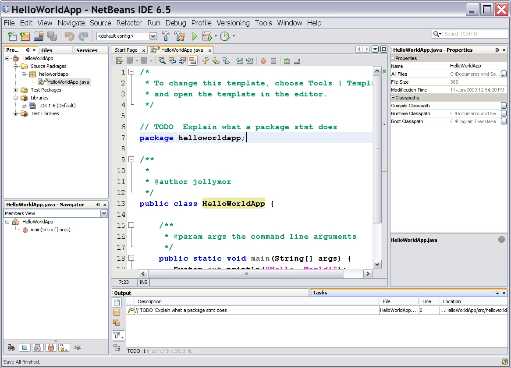
Starting New Projects
Prerequisites: You must have already set up directories for this course.
Ideally, you should have a prog24178 directory (or something similar) where you will store any course materials
or notes that you create/download for this course. Inside the prog24178 directory, you should have a sub-directory
called "programs" (or something similar). In the prog24178/programs directory is where all your applications and
projects will be stored. In these notes, this directory will be referred to as "your programs directory".
Also, before doing this section, make sure you've read and understood the lesson on
packages.
References:
From
Books24x7: Pro Netbeans IDE 6 Rich Client Platform Edition by Adam Myatt,
Brian Leonard and Geertjan Wielenga,
ISBN: 9781590598955 -- Read Chapter 2.
Additionally, if you'd like to do this and the next few sections all in one go, try the
NetBeans IDE Java Quick Start Tutorial.
What is a Project?
When you develop a program in Java, it's called a Project. A project can consists of .java source files,
compiled bytecode (.class) files, images, databases or text files, and any other files that your application
requires in order to work properly. A project can also consist of any directory or directories where the
project files are stored.
To start up a new project or application, start NetBeans and complete the following steps:
- From the File menu, choose "New Project"
- The first dialog asks you what type of project you'd like to create. We're going to make a standard console program.
- In the Categories list, select "Java".
- In the Projects list, select "Java Application".
- Click the Next button.
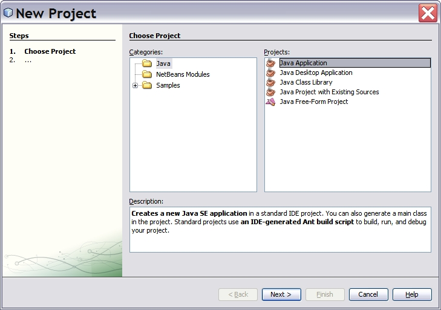
- The next dialog asks you for some details about your project. Make sure you clearly understand each of the fields you
are about to complete, as you will need to complete them for each new project you create in this course:
- Project Name: This is the name you would like to give your project.
- Remember that a project usually consists of many classes and source files, along with many other types of files.
Therefore, this should not be the name of a class that you are writing, but rather a name that summarizes what
your project or application is about.
- In this example, this project will contain our first set of programs that we will write to get used to NetBeans, so
let's call the project MyFirstNetBeansPrj
- Project Location: This is the location on your computer where the project and all it's files will be stored.
- For projects you create for this class, you should use your prog24178/programs directory or a similar directory.
- If you use the default name, be sure you make note of where it is so you will be able to retrieve assignment files
for uploading later on.
- Project Folder: This should be set already by default, and is composed of the project location followed by the
project name.
- This is the directory inside your programs directory that will contain your project and its files.
- You don't have to create the MyFirstNetBeansPrj directory; it will be created
for you.
- Create Main Class: This should already be checked. This will contain the name of your
package followed by a period, followed by the name of the "main class".
- For this course, we will use the package prog24178.weekX, where X is the week number. So for this
project, change the package name to prog24178.week1.
- A "main class" is the class in your project that contains the main() method. Many programmers just
call this class "Main". For this project, we're going to call it "HelloWorld". This means this field should
now contain the value prog24178.week1.HelloWorld.
- If you're creating a project that doesn't have a main class, just leave this option unchecked.
- Everything else on this dialog can be left the way it is, so click Finish.
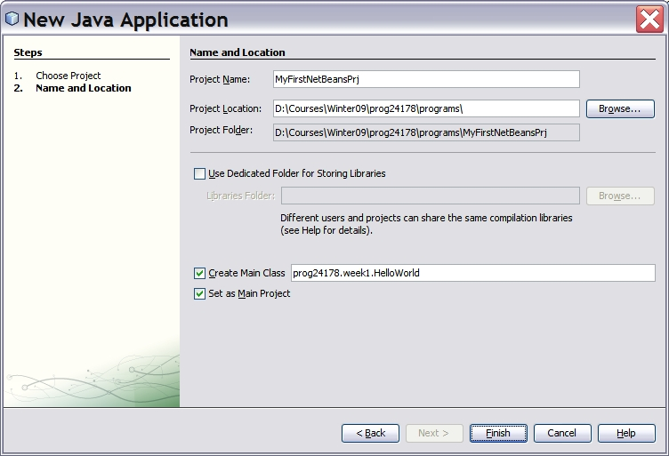
You should now see the main NetBeans IDE with all the windows discussed earlier. See if you can find them all!
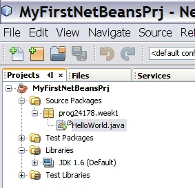In the project window,
you'll see a node with your project name. If it isn't already, expand this node
by clicking the small plus-sign (+) beside it.
You will see four nodes inside this project. The Test Packages and Test Libraries nodes are used for JUnit testing, which
will not be covered in this course (for a tutorial on JUnit testing, see
http://www.netbeans.org/kb/docs/java/javase-intro.html#test
and http://www.netbeans.org/kb/docs/java/junit-intro.html).
The Libraries node lists the class libraries that your project requires. If you open this node, you'll see that it already contains
a reference to your Java class libraries. If your project uses other libraries (e.g. maybe you want to add to Becker's Robot classes),
you can add those libraries to this node.
The Source Packages node is the main part of your project and where you'll spend almost all of your time. Open this node and you'll
see your package name (prog24178.week1). If you expand this node, you'll see your HelloWorld.java entry.
As you noticed from your previous reading, the Files window is just behind the Projects window. Click the tab for the Files window
to bring the Files window to the front.
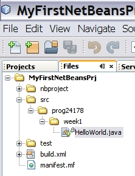Recall that the Files window displays the files that make up your project in a way that is a bit more familiar to you. Here you can
view the actual files, whereas the Project window shows the elements and components that make up your project. This difference will become
more apparent and obvious as you write more complex applications. For now, open the "MyFirstNetBeansPrj" node, if it isn't already open.
Inside MyFirstNetBeansPrj, you'll see a "src" folder. If you expand or open this folder in the window,
you'll see a sub-folder called prog24178. This folder contains another sub-folder called "week1". Recall that package names represent the
hierarchical directory structure in which those packages are organized and stored, so the src\prog24178\week1 directory is the physical path
for any classes you place in your prog24178.week1 package. Indeed, if you open up the week1 folder, you'll see your HelloWorld.java
file listed there.
You should also make note of the Navigator window, which you'll see below the Project/Files windows. It should contain an entry for
your HelloWorld class. If you expand this, you'll see your main() method. As you add more methods, instance variables, fields or constants,
and other components to a class, you'll see more "stuff" in that Navigator window. This will make it easier to navigate your larger source files:
You can select an item in the Navigator window and that item's code will appear in the editor window.
Writing Code
Add some code to your program. In the main() method, add a print statement to display "Hello, World!"
or some other text of your choice on the console.
As you're typing, you'll notice some interesting things:
- The editor will help you complete code by showing lists of possible things you might want to type, and (if your docs have been installed correctly)
it will also show you the docs if you select an item in the list by single-clicking it with your mouse. This is called Code Completion,
which we'll talk about later in this lesson.
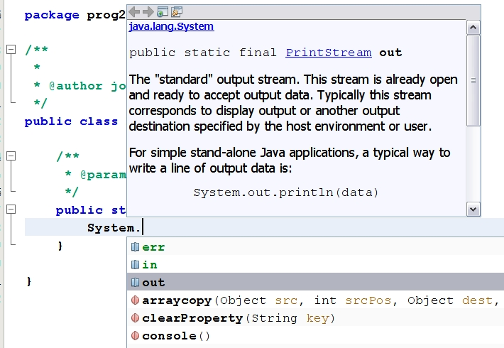
- The current on which you are typing is highlighted. This comes in handy when you're working in different windows - if you
flip back to your editor, you can quickly see where you are. It's also helpful if you scroll down without moving the cursor - when
you scroll back to your original spot, it's easy to find because of the line highlight.
- If you make any syntax errors, they are underlined with a squiggly red line and you'll see a red exclamation point
icon in the left margin where the line numbers appear. If you hover over the icon, a tool-tip will appear with
the syntax error message.
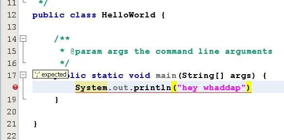
- If you select or put your cursor near a bracket or brace, that bracket/brace and its partner will highlight. No more mismatched brackets and braces!!
There are a number of other neat tricks and things in NetBeans! We'll learn about them in the section
on Cool Tricks and Features.
Adding a Class
In most of your projects you'll have more than one class, so we'll need to quickly cover how to add a new class
to an existing project in NetBeans:
- Right-click on the main project node in your Project window and select New / Java Class.
- For the Class Name field, enter "SecondExercise".
- The project should already be set to the MyFirstNetBeansPrj. If not, press cancel and start over. Make sure
you right-click on the main project node in step 1.
- The Location field should say "Source Packages". If not, select it.
- In the "Package" field, select or type prog24178.week1.
- Click Finish.
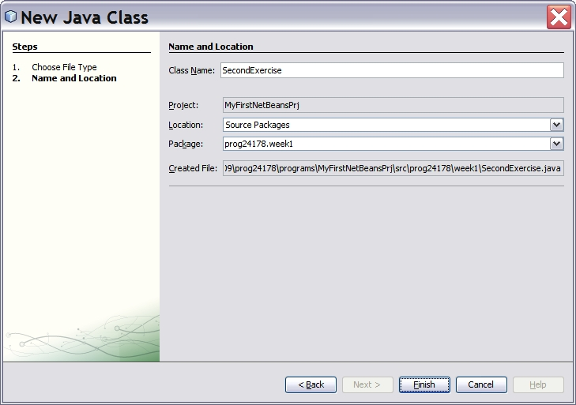
Staring Projects from Exising Sources
If you have an old project and you'd like to open it in
Netbeans, just follow these steps:
- Make sure you know the location of your project and its source files.
- In Netbeans, from the File menu, select New Project.
- In the New Project dialog, select Java, then select Java Project with Existing Sources
- Click Next
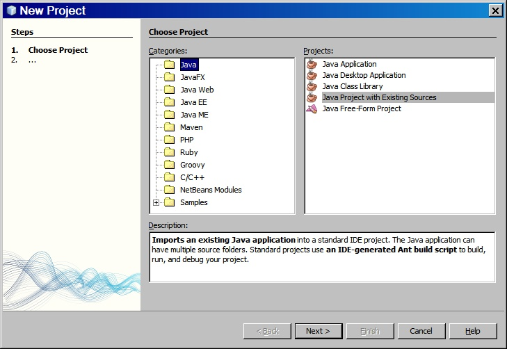
- Fill in the Project Name field with the name of this project, then click Next
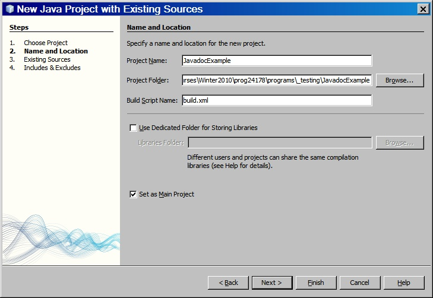
- You're now on the Existing Sources screen. The top half is
the "Source Package Folders:" list. Click "Add Folder"
- Browse to the folder where your source files are located, select the
folder, and click Ok/Open to go back to the main dialog.
- You should see your folder in the list, now. Click Next.
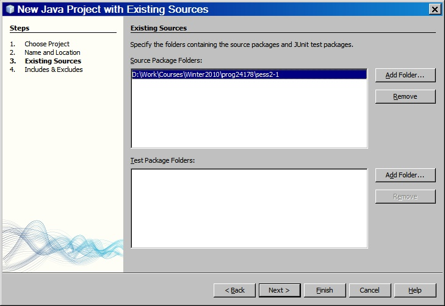
- If you get a message titled, "The specified package folder
contains compiled class files (*.class)." it means your folder
has bytecode files in addition to the source files.
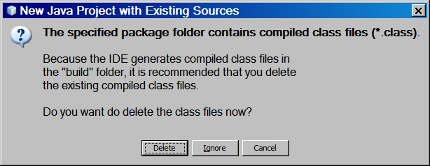
- Netbeans stores source files and bytecode files in different directories, so you need to decide what to do with the existing class files.
- You can probably safely delete them by clicking the Delete button, since compiling your source files in Netbeans will create new class files anyway.
- If you're worried about losing them, you can go to another window and move your .class files somewhere else, then return to this screen and click Ignore.
- The next screen asks you what, of the rest of the files
and directories, you'd like to include in the project.
- By default the "Includes: " field is set to "**" which
means everything. Choose which files you'd like to include
or exclude.
- In the example a, I'm selecting to include
only the .java files listed.
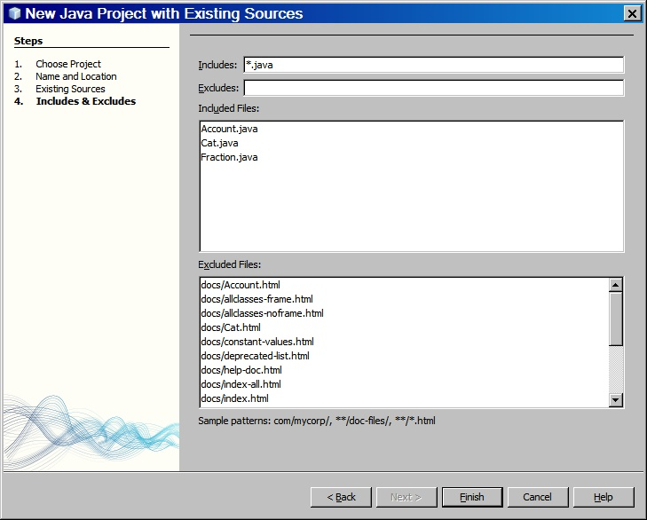
- In example b, I'm selecting
to exclude everything in the docs directory, and the ZIP
file.
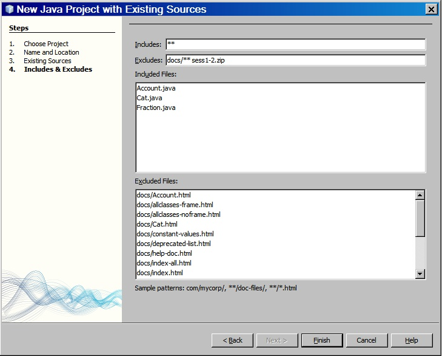
- Once you've finished selecting your files, click Finish.
You should see your project in the project node. At this time you might need to rename your package
(if it says "default package"). You can't actually rename the default package, so you simply add a
new package with the correct name (right click the project node and select New/Java Package). Then
you simply select and drag your classes into the new package.
Saving Projects
In NetBeans, the initial project and its files are saved as soon as the project is created, but if you make
changes to a file, you will probably have to save that file manually. You can probably guess how to do this: Simply choose
File/Save from the menu or press Ctrl-S to save the current file. Also, you can right-click on a file's tab in the editor and
select Save from the pop-up menu that appears. Use File/Save All to save all the open files or use
the Save All button on the toolbar.
Projects are saved as soon as they're created, and are automatically saved when files are compiled or
run. If you would like to save an individual file under another name or in another folder, you can simply
right-click the item in the Package view area and select "Save as.." from the popup menu.
As you'll probably find out later, a file is saved automatically when you compile/run it in NetBeans.
Compiling and Running Projects
In simpler editors like EditPlus, you had to compile the program before you ran it. In NetBeans, this can
all be done in one step, although there are different ways to perform this step:
- From the menu, select Run / Run Main Project
- Right click on the project in the Project window and select Run
- Press the F6 key
- If you have multiple projects open, Netbeans won't know which one you want to run, so
you can also use Shift-F6 to run the current file showing in your editor.
Whichever way you do it, the program should run if there are no syntax errors. If you run this current project,
you'll see the results in the output window below the editor:
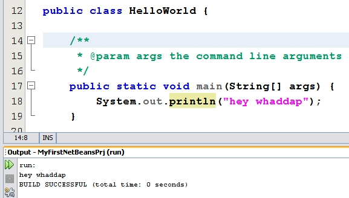
If you try to run a program that contains syntax errors, you'll see the following:
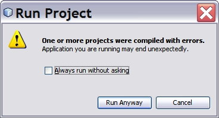
In most cases, you'll want to stop running so you can go back and find/fix the errors.
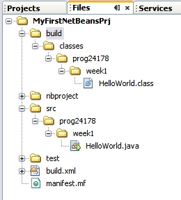After successfully running the HelloWorld project, go to the Files Window. You'll now notice a new entry in
your project called "build". This folder contains the class files that make up your project. If you expand this folder,
you'll see a folder called "classes" which contains the sub-folders prog24178\week1. As you should expect,
the week1 sub-folder contains the HelloWorld.class.
We'll discuss this more when we eventually talk about deploying an application.
One really cool new feature of NetBeans is the "Compile on Save" option. With this setting, your file is compiled
automatically when you save it. This comes in handy if you're making a series of changes before you want to run a program:
If you change many things at once, it might be more difficult to find errors later.
To turn this feature on:
- Right-click your main project node in the Project window and select "Properties".
- In the project properties window, find the Build node and expand it.
- Then locate the "Compiling" node and select it.
- Check the box titled "Compile on Save"
Closing Projects
When using editors like Eclipse or NetBeans, students often forget to close their projects. By week 3, they complain
that the IDE is running very, very slowly or not at all. The mistake is that students assume that when they close the open
files at the top of the editor window, they are closing the project, but in fact they are not! Also, when you shut down
NetBeans, the current workspace is saved! This means when you re-open NetBeans later, it will open up whatever projects
you had open last time. Obviously, since each project you have open takes up memory, you can imagine how much memory a student
will be using up by week 3 if they've never closed any of their projects!
For this reason, it's very important that you close a project when you're finished with it! Think of it
as turning off the lights when you leave the room :) .
To close a project, simply right-click it's node in the Project window and select "Close", or choose "Close Project" (might be followed
by the project name in brackets) from the File menu.
Cool Tricks and Features
NetBeans contains many other cool tricks and features that make Java coding and project management easier. Here are a few popular
ones to get you started (check any of the NetBeans references at the top of this page for more!).
Increasing Screen Real-Estate
One common complaint about the more complex IDEs like NetBeans and Eclipse is the lack of screen real-estate for the
editor window (you'll notice this a lot during class on the big screen!). In previous versions of these and similar
editors, you could only increase the size of the editor by closing all the other windows around it. This meant
that you couldn't use those windows unless you stopped to open the one you wanted.
In this version of NetBeans, you can double-click a file's tab at the top of the editor to quickly hide all the
surrounding windows. To bring the windows back, you double-click the same tab again! This is a quick and easy
way to focus on the code editor and then bring back the other windows whenever you want!
To get even more screen space for the edit window, you can go to "Full-Screen" mode. To do this, select "Full Screen" from the
View menu, or use the shortcut keys Alt-Shift-Enter to toggle in and out of Full-Screen mode. This will hide a few more screen elements,
such as the main toolbar, to give you more screen space.
Code Indenting and Formatting
Are you one of those people who've heard me say, "..you're not going to submit it like that, are you?" What a pain it is
to have to go back and format all your code with the proper indentation and spacing! If you're one of those people that
can't seem to get the editor to work for you, you'll appreciate this little trick: NetBeans has a few tools that will automatically
format your code properly!
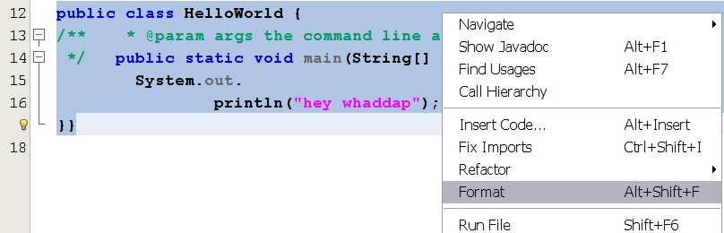
Before Formatting
If you select a chunk of code, you can then right-click it and select "Format". That's it! Your ugly
code segment has now been magically formatted into industry-standard codey goodness.
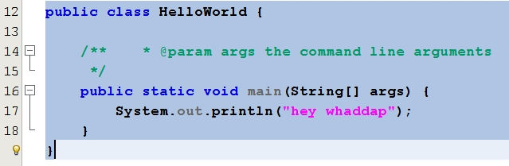
After Formatting
To properly format an entire file, make sure that file is currently displayed in the editor and click the
"Source" menu, then select "Format".
You can also use the shortcut Alt-Shift-F to format source code (a whole file or a selected segment).
To indent or un-indent a chunk of code, use your mouse to select the chunk of code and then press tab (to indent)
or shift-tab (to un-indent). You can also use the left- and right-shift buttons in the edit toolbar at the top of
the editor window. Alternatively, you can open the "Source" menu and select the "Shift Left" or "Shift Right" items,
or use the Alt-Shift-Left and Alt-Shift-Right shortcut key combinations.
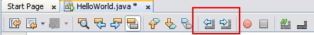
Commenting Code
If you need to comment or uncomment a chunk of code quickly, you can use the "Toggle Comment" option in the "Source"
menu. Just select the code you want commented and select "Toggle Comment" or use the Ctrl-Shift-C shortcut to
turn the comments on and off. You can also use the "Comment" and "Uncomment" buttons near the end of the editor's
toolbar.
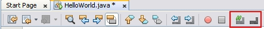
Additionally, you can select a chunk of code and use Ctrl-/ (forward-slash) to toggle the comments
on and off!
Variable/Method Highlighting
If you select a variable in your editor, you'll notice that each occurrence of that variable is highlighted.
To see how this works, go to the SecondExercise class we added earlier. Add the following
method to your class:
public class SecondExercise {
public static String reverse() {
String sentence = "Mary had a little lamb";
String backwards = "";
int p = sentence.indexOf(" ");
while (p >= 0) {
String word = sentence.substring(0, p);
backwards = word +" " + backwards;
sentence = sentence.substring(p+1);
p = sentence.indexOf(" ");
}
backwards = sentence + " " + backwards;
return backwards;
}
}
If you want to try this code out (you don't have to at this point), add the following statement to your
HelloWorld's main() method:
System.out.println(SecondExercise.reverse());
So let's say you are writing the reverse() method as part of a homework exercise, and the prof comes by to
see your code so far, and notices the variable p in your program. The prof says,
"..you're not going to submit this with that variable name, are you?!" You roll your eyes and thing, great,
now I have to change all my p's to something else ("position" would be good!).
In NetBeans, this is even easier than a search/replace: select any occurrence of the variable
p. Notice that all other occurrences are highlighted!
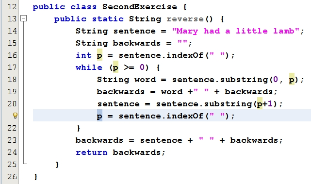
Now, with all the p's still highlighted, right-click the one you've selected and, from the pop-up menu, select
"Refactor", then select "Rename". In the Rename dialog, type the new name position
and click the Refactor button.
Notice how each variable has been changed to its new name!
What is Refactoring?
Refactoring is a term used to describe the act of changing a class or set of
classes in order to improve them. Refactoring doesn't affect the functionality of a program, only the internal structure of
the code.
Creating Constants
Let's say in addition to complaining about your variable naming conventions, your professor also says that you're
using too many string literals, particularly when you refer to the space character (" ") everywhere. "blah blah blah..",
you think with frustration, but then you remember that this is NetBeans, and things like this are so much easier!!
- Select any occurrence of the " " string literal in your reverse() method, and you'll notice (you might
have noticed this a few times earlier, actually) that a little light bulb icon appears in the margin with the
line numbers.
- Click once on this icon and a tiny menu appears. Select "Introduce Constant".
- The Introduce Constant dialog appears! In the Name field, type SPACE.
- Make sure "public" is selected and that "Replace all occurrences (4)" is checked (the 4 is the number of occurrences that will
be replaced with your new constant).
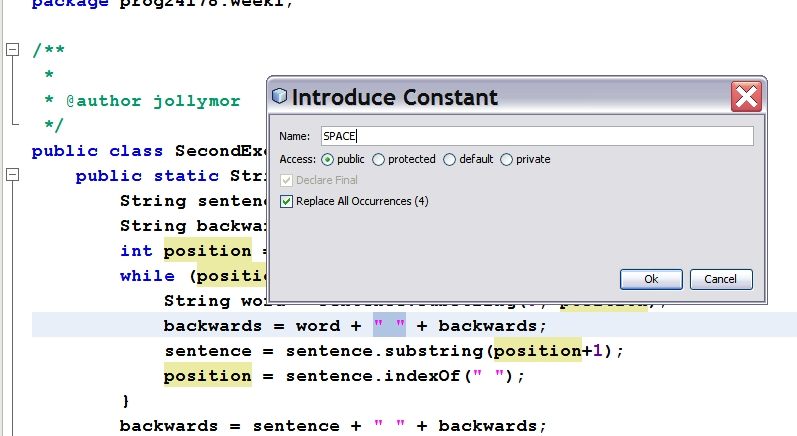
- Click OK.
You should now notice two things: the very obvious one is that now all occurrences of " " have been replaced
by SPACE and they are all highlighted. Second, a constant has been declared for
you right under your class header!
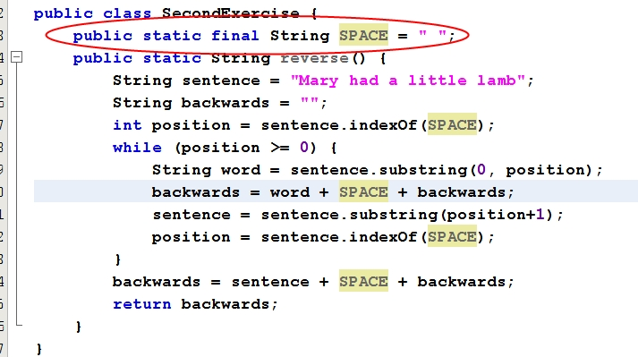
Customizing Templates
As with most editors, Java lets you customize the template used when you create new source files. In fact,
each type of source file has its own template in Java: there is a template for classes, and a template for main
classes, as well as a number of other templates.
To customize your templates, go to the "Tools" menu and select "Templates".
In the Template Manager, expand the "Java" node. You can see the different templates available - make note of the
ones that look familiar, since right now we're only going to edit one of them, but later, after you've learned
javadoc comments, you'll be editing a couple more templates.
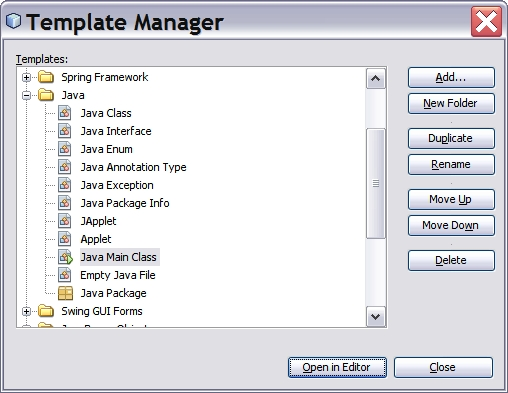
Select the template called "Java Main Class" and click the "Open in Editor" button.
You'll notice right off that these templates are a lot more complicated than the ones you're familiar with
in other, simpler editors. Still, we're only going to add comments, so it won't be too difficult.
Your current template probably looks something like this:
<#assign licenseFirst = "/*">
<#assign licensePrefix = " * ">
<#assign licenseLast = " */">
<#include "../Licenses/license-${project.license}.txt">
<#if package?? && package != "">
package ${package};
</#if>
/**
*
* @author ${user}
*/
public class ${name} {
/**
* @param args the command line arguments
*/
public static void main(String[] args) {
// TODO code application logic here
}
}
At the very top of the template, add the program documentation as required by your
submission standards:
/*
Name: [your name here]
Assignment: [assignment name]
Program: [your program name here]
Date: [assignment due date here]
Description:
[program description in your own words]
*/
Obviously you will insert your own full name and your own program name. The Assignment name, due date,
and description will be filled in for each assignment you submit.
In addition, there are some instructions that appear in your Java main classes
by default that tell you how to change the template. You can keep these
instructions from appearing in all of your projects by locating and deleting the following
line:
<#include "../Licenses/license-${project.license}.txt">
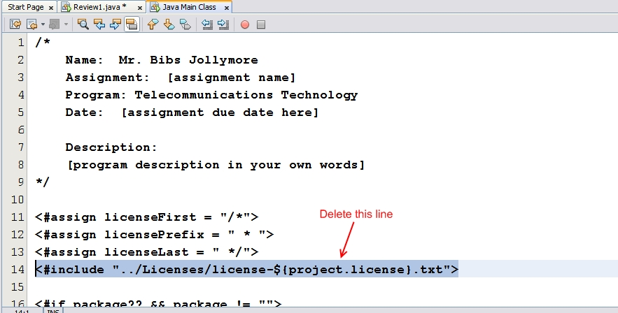
When you've finished editing your template, save it and close it. From now on, every main class you
create will have your correct program documentation!
Code Completion
References:
From
Books24x7: Pro Netbeans IDE 6 Rich Client Platform Edition by Adam Myatt,
Brian Leonard and Geertjan Wielenga,
ISBN: 9781590598955 -- Read Chapter 3.
One of the biggest and coolest features of NetBeans is code completion. Code completion allows you to use various
shortcut keys and "templates" to help you type frequently-used code a lot faster.
The Code Completion Box
We saw and tried the code completion box earlier when we created our HelloWorld program.
We also briefly went over some of the Code Completion settings when we customized NetBeans.
In Chapter 3 of the NetBeans textbook referenced above, the section titled "Code Completion" goes into these
two things in a bit more depth. If you feel you need to know more than what we've already seen, read this section
of Chapter 3. It will show you more advanced options like changing the amount of time it takes for the box to appear
and how the items in the box are sorted.
In that same Code Completion section of chapter 3, you'll probably want to grab Table 3.1. You can download
this table as a speadsheet and print it (or whatever you wish) so you have a reference of the shortcut keys you can
use in the Code Completion Box.
If you're typing code and the code completion box doesn't appear when you want, you can force it to appear by
using Ctrl-Space. If this happens often, check your settings, as you might have inadvertently turned off code completion
for some particular filter.
Code Templates
Code templates are small sets of characters that are used as shortcuts to larger statements or even entire structures
and sets of statements! Try some out! Go to your HelloWorld program and, in the main method, type each set of characters below
followed by the tab key:
Isn't that cool?! Notice also that when you type sout[Tab] the cursor is sitting
in between the quotes inside the println("") method. You'll see similar conveniences with the other shortcuts.
If you go to the Tools menu and select Options, then go to Editor and select the Code Templates tab, you can
modify the existing templates and add new ones.
The "Code Templates" section of Chapter 3 in the NetBeans textbook explains how to customize and modify your code
templates.
Debugging Code
References:
From
Books24x7: Pro Netbeans IDE 6 Rich Client Platform Edition by Adam Myatt,
Brian Leonard and Geertjan Wielenga,
ISBN: 9781590598955 -- Read Chapter 4.
NetBeans has many tools available that help you debug programs.
These tools are standard for most sophisticated IDE's, so if you've programmed in some other visual
environment (e.g. Visual Basic or Eclipse), you'll be familiar with these already. To try out these tools,
do this tutorial:
- Close the current project.
- Start a new Java project called Debugging and make sure it's in the prog24178.week1 package.
- Add a main class called DebugExample
Once you've got DebugExample in the editor window, add the appropriate method and the code to the main method
so that when you're done, your class looks like this:
public class DebugExample {
public static void main(String[] args) {
Scanner keysIn = new Scanner(System.in);
System.out.println("Factorial Calculator");
System.out.println("Calculates factorials for values less than 25.");
System.out.print("Enter number: ");
long num = keysIn.nextLong();
while (num > 0 || num < 25) {
long fact = factorial(num);
System.out.println(num + "! = " + fact);
System.out.print("Another number: ");
num = keysIn.nextLong();
}
System.out.println("Thanks!");
}
public static long factorial(long n) {
long f = 1;
for (int i=0; i<n; i++)
f *= i;
return f;
}
}
As soon as you get this code in the editor, you should be able to see right away that there are a number of errors.
You can tell by all the red icons in the left margin, the red squiggly lines under some parts of the code,
and by the little markers in the right margin:
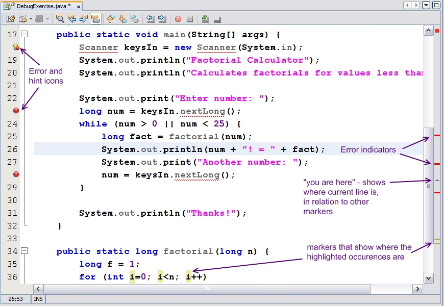
If you hover your mouse over all three of these types of indicators, you can see tooltips that display the
various error messages. In doing this, you'll probably notice that all the errors indicate that the Scanner
class is being instantiated, but it hasn't been imported!
Fixing this error is simple!
- Click once on the error/hint icon on line 16.
- A tiny menu appears that lists various suggested solutions for this error. The first one is "Add import for java.util.Scanner".
Click this item!
- Check your code and confirm that the import statement was added.
That got rid of all of the error indicators!
Now let's run the program! Do you remember how?
When you run the program, the output window will display a prompt for the user to enter a number.
Let's type 5 and press enter:
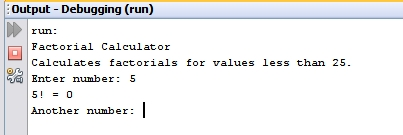
You can see from your output that something is wrong with our program since 5! is certainly not 0!
(it should say 120, since 5 * 4 * 3 * 2 * 1 = 120).
The program hasn't crashed, so let's try another number. I'm guessing that entering a value greater than
25 will allow us out, so let's try entering 30:
Hmm the program didn't quit! Let's try a negative value - enter -5.
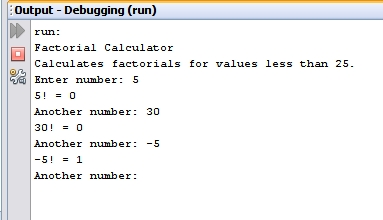
The program still didn't quit! In fact, I think we're stuck, so stop the program by pressing the red
square on the left side of the debug window.
Lets fix problem #1 first. Since the factorials aren't being calculated correctly, it's likely that
the problem exists in the factorial() method. To help us figure this out, we can allow the program to run
until it gets to the method, and then pause (not terminate). Then we can look around and what's happening,
and even watch the program execute line by line as we examine each of the variables and objects. To do this,
we first need to make the program pause by setting a breakpoint.
If you have problems using the debugging tools, make sure debugging is enabled for this project: Right-click
the project's node in the Project window and select Properties. Open the Build node and select Compiling.
Make sure the "Generate Debugging Info" checkbox is checked.
Breakpoints
You can pause execution of a program by setting a breakpoint on a particular statement. When NetBeans
is debugging and encounters a breakpoint, it will pause the program and wait for you to do something
(continue running, execute the next statement only, terminate the program, etc). During this time,
the program is in "break mode", or we say that "the program execution has paused".
Breakpoints are useful when debugging because while a program is paused, you can look at the values
of variables and see if they contain what you think they should, or you can examine the state of
objects in the program to see if they're correct or incorrect. In some cases, you can also look ahead
at expressions or conditions and see what they will evaluate to.
There are different kinds of breakpoints, and you can read about them in Chapter 4 of the NetBeans textbook,
but for now we'll look at only two kinds:
- Line breakpoints: these are breakpoints on a single, executing line. The program will pause when this
breakpoint is reached.
- Method breakpoints: these are breakpoints set on a method. The program will pause each time the method
is encountered or invoked.
To set a breakpoint on a statement, single-click the left margin beside the statement (where the line numbers
appear). A tiny, dusty-red square (line breakpoint) or triangle (method breakpoint) appears (for line
breakpoints, the line is also highlighed in the same colour. To get rid of the breakpoint, single-click the square or triangle again and the breakpoint will be
removed.
You can also toggle breakpoints on and off by using "Toggle Breakpoint" in the Debug menu, or using the
shortcut keys Ctrl-F8. You can also right-click a line and select "Toggle Breakpoint".
You can set as many breakpoints as you like, just don't forget to delete them all when you're done debugging!
If you do have multiple breakpoints, it's sometimes easier to manage them by using the Breakpoints Window.
Add a bunch of breakpoints to your code (it doesn't matter where, we'll remove them in a moment) and then
open the Breakpoints window by clicking the Windows menu, then selecting Debugging / Breakpoints. You'll see
a list of your breakpoints below the main editor window. Here you can temporarily enable/disable breakpoints,
and delete breakpoints. To delete all your breakpoints, select them all (click and hold Shift like you would
in a file manager) and right-click, then select "Delete All".
Let's set a method breakpoint on the factorial() method. This will make our program pause when it reaches
the method, so we can then step through the method and see what's wrong.
To see how the breakpoint works, let's now run the program in debug mode by doing one of the following:
- Select "Debug Main Project" from the Debug menu
- Right-click the project's node in the Project window, and select "Debug"
- Press Ctrl-F5
The program will then start running, and it will pause while it's waiting for the user to enter a number.
If you can't see the prompt, make sure the window titled "Debugging (debug)" is visible below the editor
window. Enter 5 and press Enter.
When the program reaches the factorial() method, it will pause. You'll see that the statement invoking
the factorial() method is highlighted to show where the program execution is coming from, and the first
statement in the method is highlighted to show what statement is about to execute next.
In the Debugger Console window, you'll probably see something such as:
Listening on javadebug
User program running
MethodBreakpoint [prog24178.week1.DebugExercise].factorial '(J)J' successfully submitted.
Method breakpoint hit in prog24178.week1.DebugExercise.factorial at line 37 by thread main.
Thread main stopped at DebugExercise.java:37.
If you wish to stop the debugging session, you can:
- Press the red square button in the main toolbar
- Select "Finish Debugger Session" in the Debug menu
- Press Shift-F5
Stepping
Stepping occurs when you control the flow of program execution by invoking statements on command.
For example, you might want to step through a method one statement at a time so you can take the time
to examine variables or object attributes, or watch how data comes in from a data file.
In NetBeans, the Debug menu contains options called "Step Into" (shortcut key is F7) and "Step Over"
(shortcut key is F8).
Step Into is used when you want to step into a method and execute it line by line. However, sometimes
you'll know that a method works just fine, so you might want to just execute it and move on to the next
statement after the method. In this case you can use Step Over. Step Over will execute the entire
method in one step and pause again when it reaches the statement after the method.
In addition, you can Step Out of a method you are in the middle of stepping through. This comes in handy
when you're stepping through a method, and decide that you want to finish quickly. Usin the Debug / Step Out option
in the menu, or pressing Ctrl-F7, the program will finish the method all at once and then pause again at
the statement after the method's calling statement.
| WATCH OUT! If you use Step Into while you're on a statement
such as System.out.println() or keysIn.nextInt(), you'll step into these methods, and things get ugly.
Pay attention when you're debugging: Use Step Over when you're about to execute a method that is part
of the Java class library! If you step in by accident, use Step Out or Ctrl-F8 to go back to your program. |
Let's start debugging the program and step through the factorial() method. If you haven't already, get into
break mode by adding a breakpoint to the factorial() method header and starting a debug session.
You might have noticed that there are Step Into, Step Out, and Step Over buttons in the main toolbar while
you're in debug mode!
Your program will run through the first part of the main method, which displays the prompt and asks
for a number. In the console, type 5 and press enter. The program will continue, and then it will
pause when it gets to the factorial() method as described earlier.
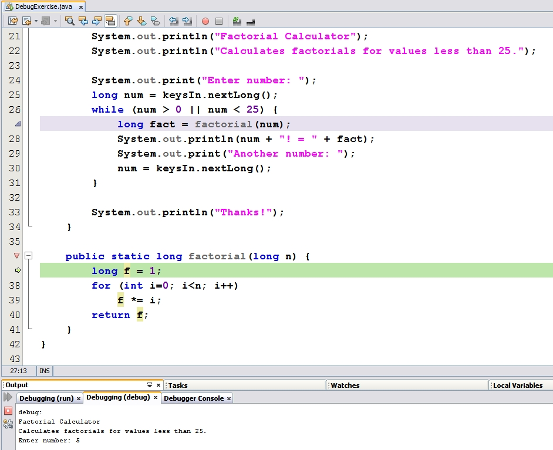
Now that your program has paused, have a look at the windows below your editor - you should see a window
titled "Local Variables". As you might guess, this window lists the current local variables that are accessible
at this point in the program, and the values they contain, if any.
In the Local Variables window now, you should see the variable n as type "long" and with a value of 5.
The Local Variables window is handy when you want to step through a program and see what the variables contain
as you go! Try it out:
Let's start stepping through the code so we can see what's going on. Press F7 once, or use the Step
Into button or menu, to execute the next statement that defines and intializes the
variable f.
After executing the long f = 1; statement, you should notice that the
local variable f is now added to the Variables view, and is showing the initial value of 1. In addition,
the editor window indicates that the next statement to execute is the start of the for-loop.
Use Step Into once more to start the for-loop. You'll see the loop counter
i with the staring value of 0 appear in the Variables view.
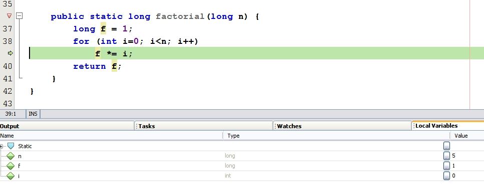
Use Step Into one more time. We should see the value of the variable f change as a result of the
statement f *= i;.
What does the variable f end up getting after this statement executes? Since f was 1 and i was 0,
the variable f is assigned 1 * 0 = 0!
Use Step Into a few more times and watch the counter i increase. What happens to the variable f?
It stays at 0! Recall that f *= i is equivalent to the statement f = f * i. Since the value of f became 0 in the first iteration of the for-loop, every subsequent calculation also resulted in a value of 0!
Now that we know what the problem is, we can fix it. Terminate the debugging session
and fix the for-loop.
public static long factorial(long n) {
long f = 1;
for (int i=2; i<=n; i++)
f *= i;
return f;
}
(I initialized the loop counter to 2, since initializing to 1 is pointless - f is already initialized
to 1, so starting the loop with 1 adds nothing to the growing value of f.)
Once you've fixed the factorial() method, clear your breakpoint(s). Now run the program normally.
The factorial is now calculating correctly for values from 1 to 25, but the the program still doesn't
quit when it's supposed to. It's likely that the problem is with the while loop, so set a breakpoint
on the statement above the loop
where we retrieve the number from the user. Remember that when you want to step this statement, use Step
Over!
Start the debugging session.
The program is paused and ready to execute the keysIn.nextLong() statement. Press F8 or use Step Over
to execute this statement, since we really don't want to go inside the Scanner class and see how the nextLong()
method works. The program will then wait for you to enter a value. Type 5 at the prompt in
the console and press Enter.
At this point, we're sitting on the while-loop header. We want to see what the values of the two
conditions will be, then maybe we can determine if they're incorrect, which could be why our program
won't terminate. How can we look ahead and see what the value of an expression will be?
Inspecting Variable Values and Expressions
We've already discovered that while the program is in break mode, you will see a list of the accessible
variables in the Variables view. Variables that reference objects will include a + sign beside them, as
these can be expanded to view the contents (e.g. properties).
You can also view the results of expressions. To view the result of the first expression in the
while-loop, select the expression with your mouse. Then hover over it: you should see a tool-tip with something
like "num > 0 = (boolean) true. This tells us
that the first condition is true. Try the same process on the second condition. It should also tell
you that the second condition is true.
The value 5 that we entered is valid, and this seems to think so, so let's try the next iteration.
We want to come back to this while-loop header and check these conditions again, so it might be easier
to set them up as watches. Watches are expressions that you want to watch while the program runs.
It's easier to set up watches for expressions if you think you're going to be inspecting them a lot.
To set up a watch for the first condition, select it with the mouse and right-click.
Select "New Watch" from the popup menu. A small dialog box will confirm that you want to watch the expression
"num > 0". Click OK.
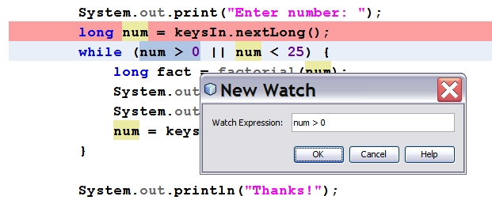
Add the second condition to the watches, also.
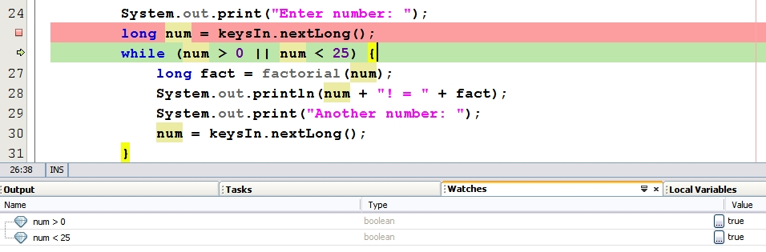
If you're wondering, "Can't I just add the whole expression "num > 0 && num <25" to
the Expressions window?" the answer is, "Yes! You can!"
To continue, use Step Into to execute the while loop statement.
We know the factorial() method is working fine, so we don't need to step into it - we can skip
over it. Use Step Over to execute the factorial() statement.
Use Step Over on the next three statements. You'll be prompted to enter another number, so go back to
the window where your program is running.
This time, let's enter a value that should terminate the loop: 0.
Enter 0 at the prompt in the
console window and press Enter.
Once you're back up at the top of the loop, check the Watches window and see what the values of
the two loop conditions are: the first one is false, and the second one is true! The loop conditions
are joined using the || (OR) operator, and we know that with an OR, the loop will continue as long as
one or both of the conditions are true. Therefore, "num > 0 || num < 25" will evaluate to "true"
(inspect the entire condition if you want to check!) The loop is about to continue!
By now, you should see the problem. We told the while-loop to continue if the value of num is greater
than 0 or less than 25. Every number fits this criteria! What we should have told our loop is that
it should continue only if the value of num is greater than 0 AND less than 25.
Stop debugging and fix the loop by changing the || operator to the && operator. Then step through
the program again to see if that fixes everything.
That's a quick introduction to debugging with NetBeans! Check out some of the references mentioned
earlier to find out more about how NetBeans can help you debug and manage your programs and projects.